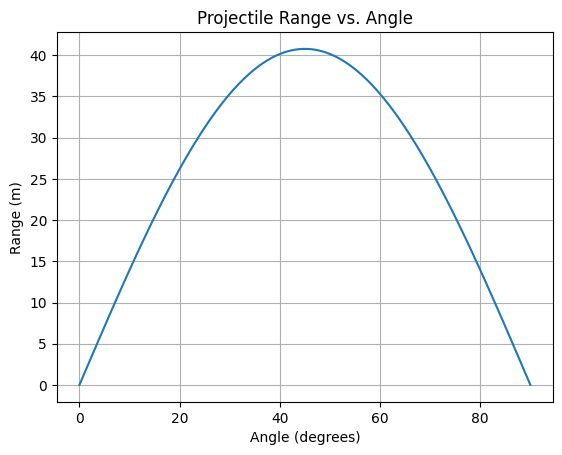

Problem 1
Investigating the Range as a Function of the Angle of Projection
Motivation
Projectile motion is a fundamental concept in physics with applications in sports, engineering, and astrophysics. This study explores how the range of a projectile depends on the angle of projection.
- Theoretical Foundation Governing Equations Projectile motion follows Newton's second law, and we assume motion under constant acceleration due to gravity, ignoring air resistance.
The horizontal motion is governed by:
x=v0cos(θ)tx = v_0 \cos(\theta)tx=v0cos(θ)t
The vertical motion follows:
y=v0sin(θ)t−12gt2y = v_0 \sin(\theta)t - \frac{1}{2}gt^2y=v0sin(θ)t−21gt2 Solving for the time of flight when the projectile returns to the ground (\((y = 0)\)): tf=2v0sin(θ)gt_f = \frac{2v_0 \sin(\theta)}{g}tf=g2v0sin(θ) The range, which is the horizontal distance traveled, is given by: R=v0cos(θ)tf=v02sin(2θ)gR = v_0 \cos(\theta)t_f = \frac{v_0^2 \sin(2\theta)}{g}R=v0cos(θ)tf=gv02sin(2θ) Family of Solutions
The range is maximized when \(\theta = 45°\), as \(\sin(2\theta)\) reaches its peak at this angle. Different values of \(v_0\) and \(g\) shift the entire curve up or down, affecting the overall range.
- Analysis of the Range
The function
R(θ)=v02sin(2θ)gR(\theta) = \frac{v_0^2 \sin(2\theta)}{g}R(θ)=gv02sin(2θ) follows a sinusoidal form, reaching its peak at 45 degrees.
Increasing \(v_0\) increases the range quadratically. A higher gravitational acceleration \(g\) decreases the range. If the projectile is launched from a height \(h\), the range expression becomes more complex:
R=v0cos(θ)g(v0sin(θ)+(v0sin(θ))2+2gh)R = \frac{v_0 \cos(\theta)}{g}\left(v_0 \sin(\theta) + \sqrt{(v_0 \sin(\theta))^2 + 2gh}\right)R=gv0cos(θ)(v0sin(θ)+(v0sin(θ))2+2gh)
3. Range Analysis
- Angle Effect: Range is maximized at \( 45^\circ \) and symmetric around it.
- Initial Velocity: Range increases quadratically with \( v_0 \).
- Gravity: Higher \( g \) reduces the range.
4. Applications
- Sports: Optimizing throw angles in games.
- Engineering: Ballistic trajectory predictions.
- Space Science: Rocket launch calculations.
5. Python Simulation
import numpy as np
import matplotlib.pyplot as plt
def projectile_range(v0, theta, g=9.81):
theta_rad = np.radians(theta)
return (v0 ** 2) * np.sin(2 * theta_rad) / g
v0 = 20 # m/s
theta_values = np.linspace(0, 90, 100)
ranges = [projectile_range(v0, theta) for theta in theta_values]
plt.plot(theta_values, ranges)
plt.xlabel('Angle (degrees)')
plt.ylabel('Range (m)')
plt.title('Projectile Range vs. Angle')
plt.grid()
plt.show()

6. Results & Discussion
The simulation confirms that range is maximized at \( 45^\circ \). The relationship is symmetric, meaning \( 30^\circ \) and \( 60^\circ \) yield the same range.
Limitations
- No air resistance, wind, or uneven terrain considered.
Extensions
- Adding drag forces for real-world accuracy.
- Studying projectile motion in different gravity environments.
7. Conclusion
Projectile range depends on the angle, velocity, and gravity. While an idealized model is useful, real-world conditions require further refinement.